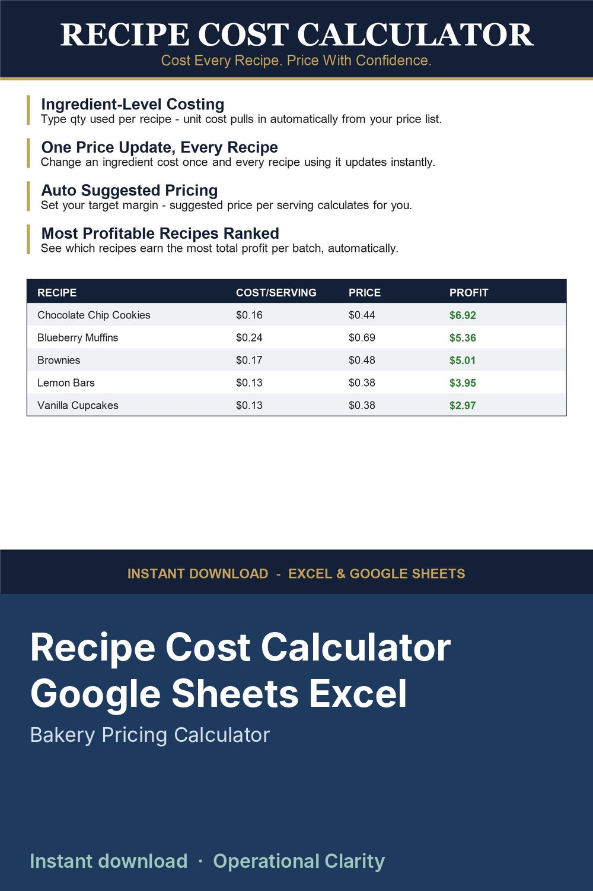

Recipe Cost Calculator Google Sheets Excel

Stop guessing what to charge for your baked goods or food products - cost every recipe down to the ingredient and let the sheet tell you what to price it at.
Enter what you actually pay per cup, per stick, per egg, per unit for each ingredient once in the INGREDIENT COSTS tab. Then build out each recipe by listing which ingredients it uses and how much - the unit cost pulls in automatically. Change an ingredient's price later (flour went up again) and every recipe using it recalculates instantly - no re-costing recipes one by one.
Set a target profit margin per recipe and your suggested price per serving calculates for you. The DASHBOARD tab ranks your recipes by total batch profit, so you can see at a glance which items are actually worth your time to bake and sell.
WHAT'S INCLUDED
- INGREDIENT COSTS: your master ingredient price list, referenced by every recipe
- RECIPES: cost breakdown for up to 4 ingredients per recipe, auto margin-based pricing
- DASHBOARD: average cost, average suggested price, top 5 most profitable recipes ranked
- START HERE: setup instructions
WHO THIS IS FOR
Home bakers, cookie businesses, small food producers, and bakeries who sell their own baked goods or food products and need real numbers behind their prices - not guesswork.
COMPATIBILITY
Built with standard formulas (INDEX, MATCH, AVERAGE, SUMPRODUCT) - works correctly in both Excel and Google Sheets. Comes pre-loaded with 8 sample recipes so you can see exactly how it works, then replace them with your own.
DIGITAL DOWNLOAD - no physical item will be shipped. File delivered instantly after purchase.
LICENSE: for personal / single-business use only. Not for resale, sharing, or redistribution (including modified versions).